Ineffable Glossolalia
Ineffable Glossolalia is a virtual environment made in the Unity game engine for the HTC Vive virtual reality platform, as well as PC and Mac desktop.
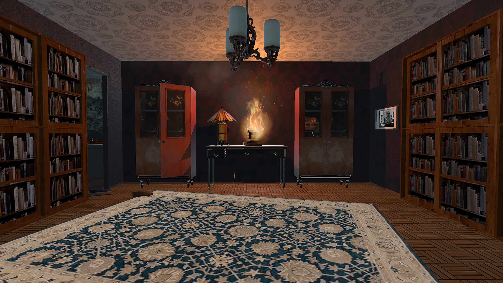
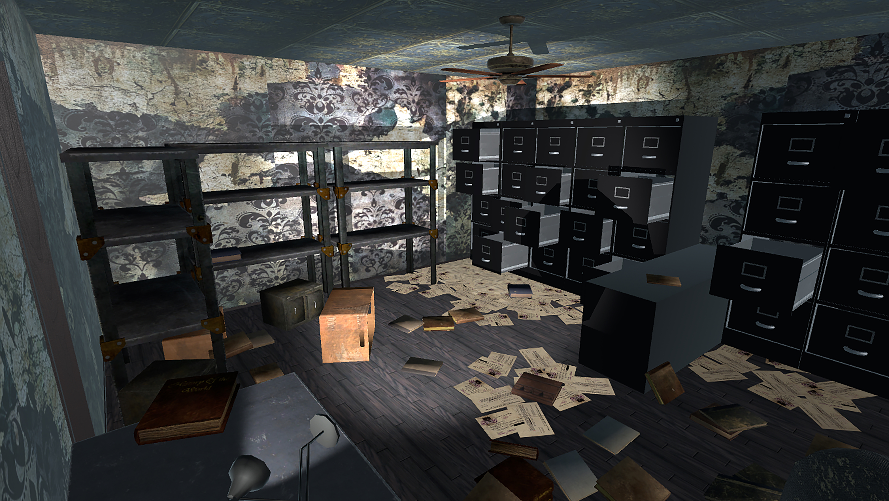
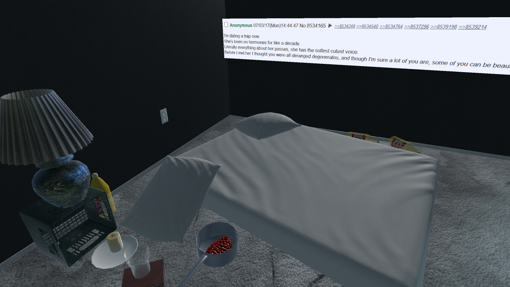
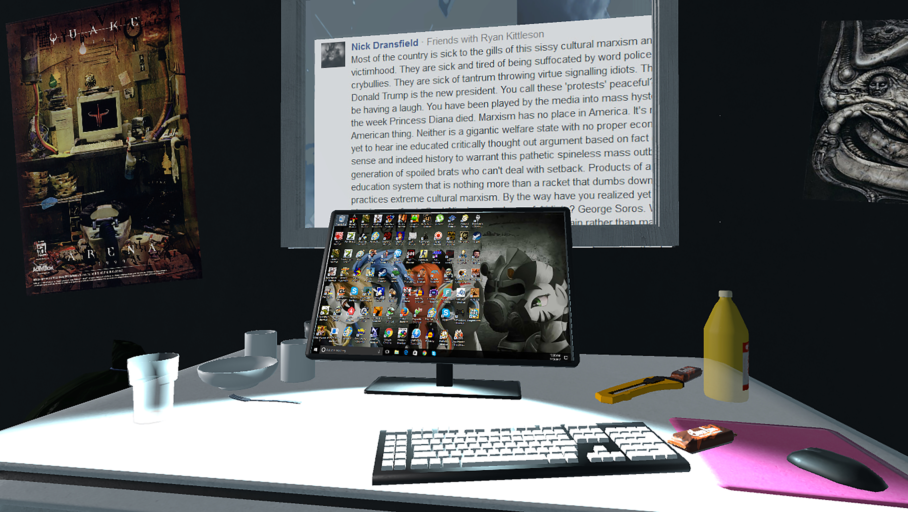
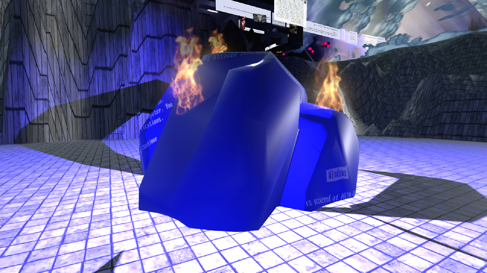
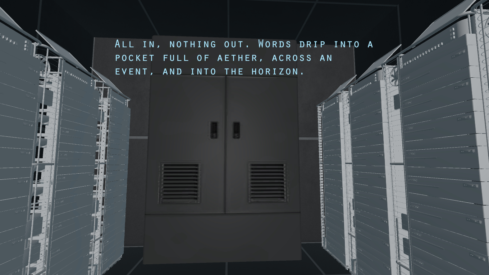
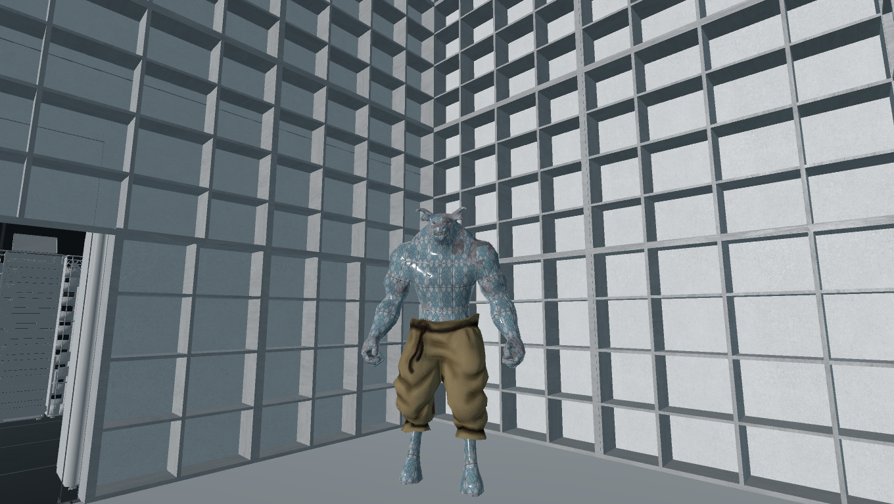
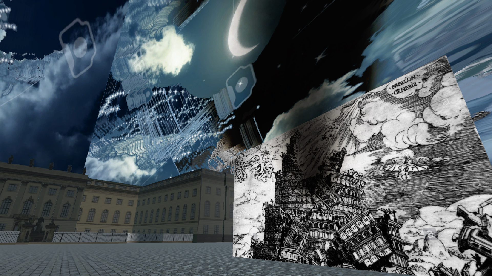
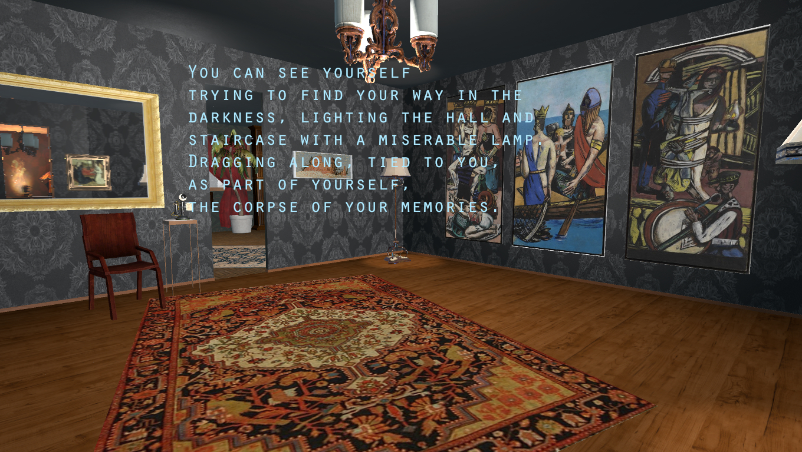
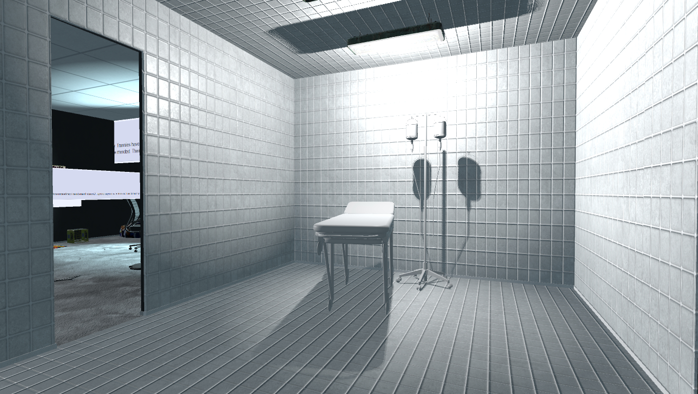
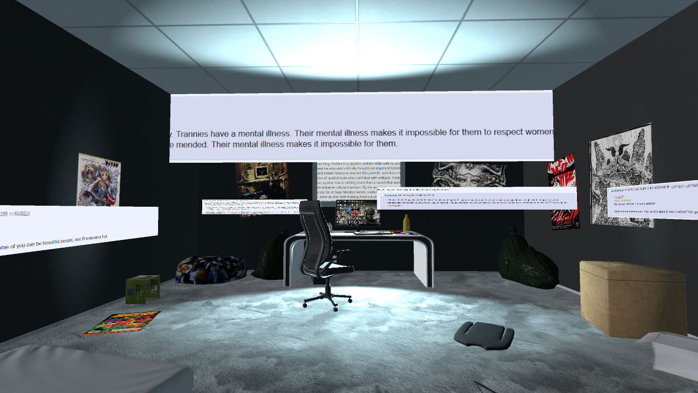
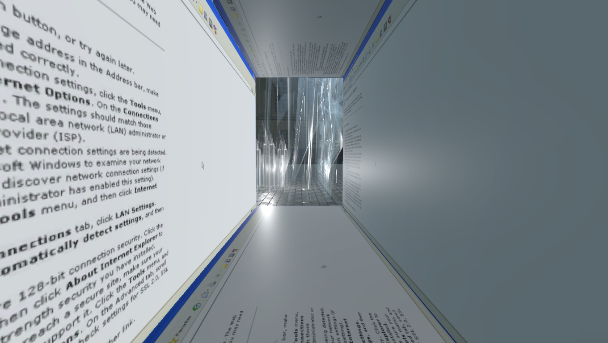
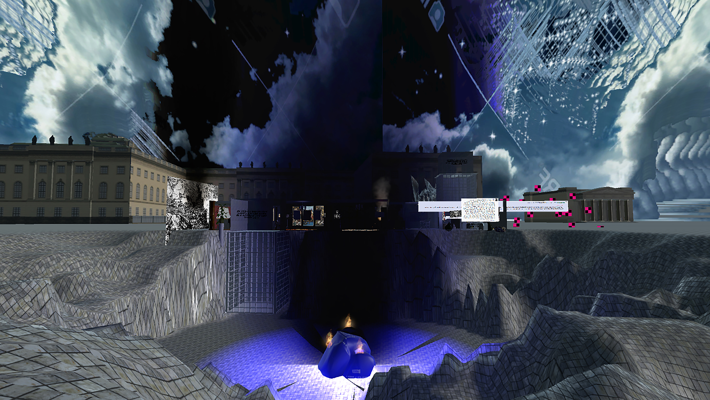
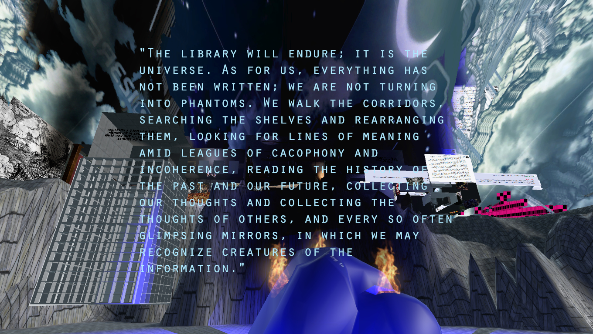
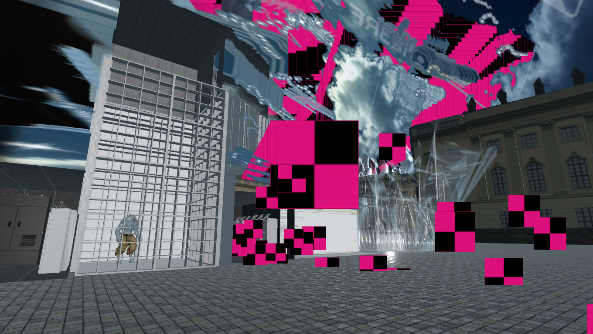
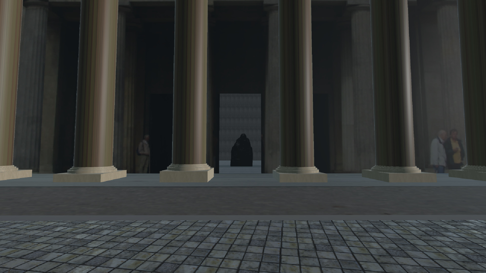
I find that words often fail to describe trans experiences. I am defined as in between, in
flux, as occupying no fixed position—post truth according to past truth claims. Because
the existence of subjects like me has long been brutally suppressed, I lack the vocabulary
to coherently speak my truth, and so I reach into myth, and neologisms, and into ruptures
where cultural mores have lapsed and something akin to me can be glimpsed. This creates an
imperfect lexicon of appropriated fragments and smears. But nevertheless, I must
express—an ineffable glossolalia.
Ineffable Glossolalia is a dreamy conflation inspired by Borges' Library of Babel and the
German Institut für Sexualwissenschaft—a Weimar era sexual research clinic which performed
seminal transgender studies before being sacked by Nazi youth in 1933. Although the
institute was progressive in many ways, its founders were strong proponents of eugenics,
and instrumentalized their clients to this end. Nonetheless a great deal was lost when the
institute's archives were burnt as part of the infamous May 10th book burning in
Bebelplatz Square. This piece inhabits the reverberations of archival loss, the ongoing
effects of lack, and explores the ways in which erased people must often mend and make do.
Music by
Rani Baker
Words by: Crystal Castles, Max Beckman, Gaius Valerius Catullus, Heinrich Heine, Magnus
Hirschfeld and his institute, Jorge Luis Borges, the Deutsche Studentenschaft, and Tabitha
Nikolai